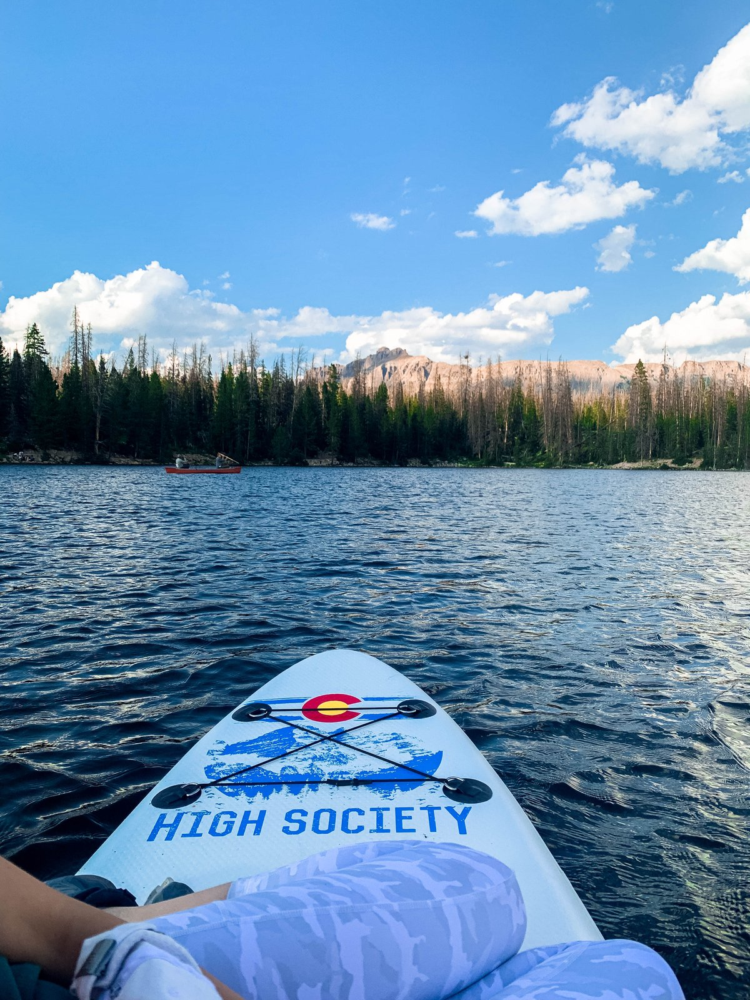
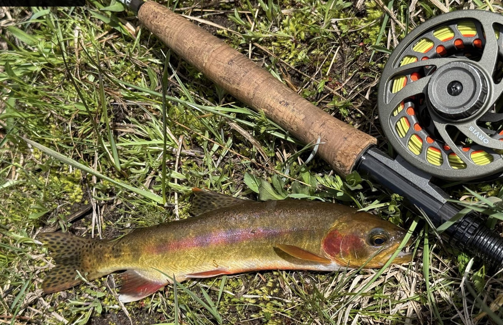

Four days at Echo Lake. Mostly chill. Boys drive what we do each day, leaders set the rhythm. Times are intentions, not commitments — except for "meet at Tim's house" and "drop off at home."
Two groups
Teachers & Priests only: full trip — Monday July 13 → Thursday July 16 Deacons: Wednesday July 15 → Thursday July 16, driven in by a separate set of leaders.
Monday — Hike In
July 13, 2026
09:00Meet at Tim's house, depart. Bring filled water bottle and a sack breakfast or cash for the gas station stop.
10:30Gas station stop. Last bathroom, last snacks, last cell signal.
11:30Arrive Fehr Lake Trailhead. Boots on. Day-packs only — all heavy gear goes in the Jeep + trailer to camp.
~13:30Optional bouldering / scramble en route if the group is moving fast. Decided in field.
~14:00Hoover Lake — Jeep pickup. Boys arrive at the end of the trail. Refill water from the spring. Jeep shuttles to camp.
~16:00Camp set up at Echo Lake. Pitch tents, claim sleeping spots, scout the lake.
~18:30Dinner. First night is a good one — we just hiked in. Cooked by leaders on the Blackstone.
~07:30Breakfast. Boys cook on the Blackstone. Eggs / pancakes / bacon.
AMPaddle boarding on Echo Lake. Inflatable boats and kayaks too.

Paddle boarding on a Uinta lake
AMFishing. Brook trout, golden trout. Limited golden trout — handle gently, photo, release if you'd like.

What's possible — photo: Ridge Chambers at Echo Lake, Jul 2025
MiddayLunch + free time. Swim, hike around the lake, talk.
PMActivities station rotation: archery, BB guns, axe throwing, knife throwing. All supervised. Firearm policy: pending church confirmation
~18:00Big dinner. Eat well — survival night follows.
~19:30Survival Night begins. Boys in groups of 2–3 head ~100 ft from main camp. Each group has a backpacking stove, water filter, freeze-dried meals, and a SPOT GPS. They build a shelter, light a small fire if allowed, sleep out. See Safety for protocols.
22:00Leader check-in at all survival sites.
00:00Midnight check-in. Lights out.
Wednesday — Deacons Arrive
July 15, 2026
~07:00Survival groups return to main camp.
~08:00Group breakfast. Hot, plentiful.
Late morningDeacons arrive via Murdock Basin Road. Driven in by leaders — no hike. Welcome, orient, claim a tent.
PMActivities together. Paddle boards, kayaks, inflatable boat, fishing. Optional short loop hike around Echo Lake.
~18:30Dinner. Leaders cook. Beef-based — comfort meal for night two.
EveningCampfire chats, games (can jam, lawn games), stars.
Thursday — Hike Out
July 16, 2026
~07:30Breakfast. Use up the eggs and bacon.
AMPack up. Heavy gear back into the Jeep + trailer. Boys keep day packs (water + snacks only).
Mid-morningJeep shuttle back to Hoover Lake. Boys begin the hike out — uphill, ~1.5 mi, ~450 ft gain. Light loads only.
~MiddayArrive Fehr Lake Trailhead. Load vehicles.
AfternoonDrive home. Boys dropped off at their houses on the way back through the valley.
Why the shuttle? The trail from the highway down to Hoover Lake is the scenic part — three lakes, descent through the basin. The Hoover-to-Echo section is mostly road walking with no payoff. Boys get the good hike; Jeep handles the rest.